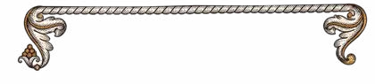
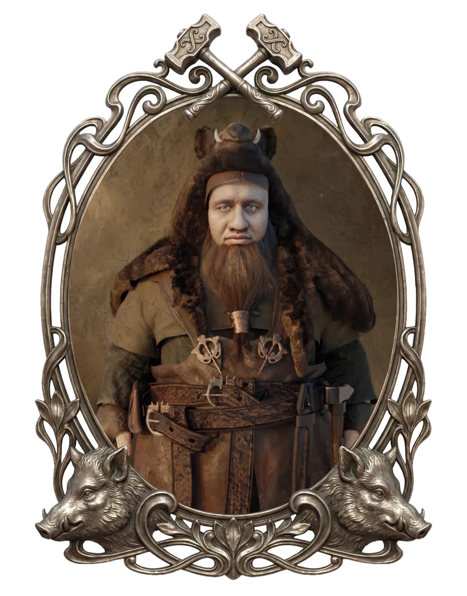
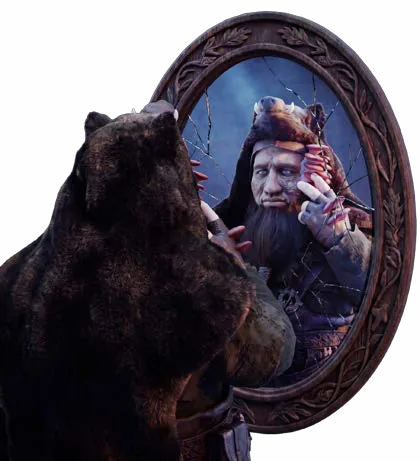
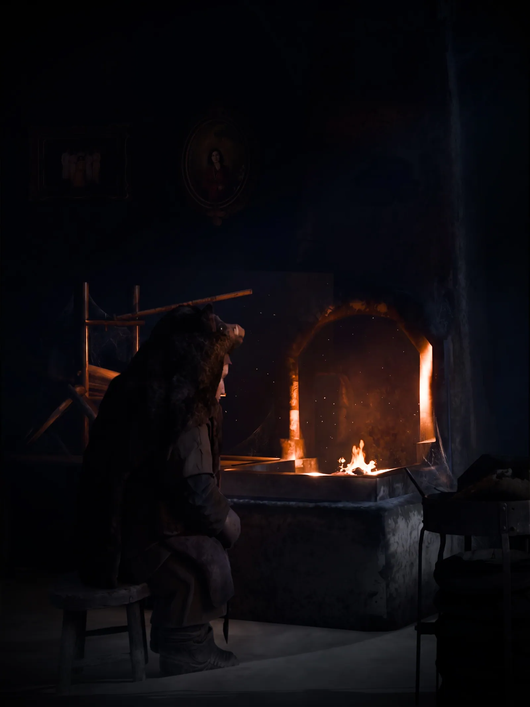
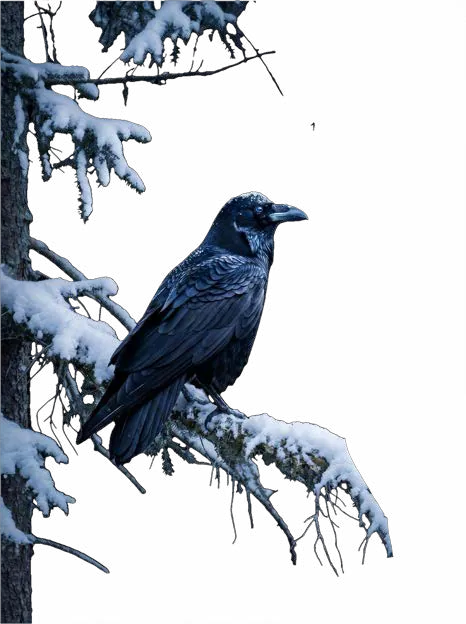

Dưới Những Tầng Rễ
Người ta kể rằng, những cây nấm chỉ mọc lên ở những nơi thiếu ánh sáng: trong những khu rừng ẩm lạnh, trong lòng đất sâu thẳm, trên những thân cây đã chết… Nhưng có những cây nấm không mọc lên từ đất. Chúng mọc trong trái tim của những kẻ đã quá lâu không còn biết mình thuộc về đâu.
Ở nơi tận cùng của Cửu Giới, nơi rễ cây khổng lồ cắm sâu vào những dòng sông nguyên thủy và những nhánh cây vươn tới tận những vì sao, tồn tại một thứ cổ xưa hơn cả ký ức của loài người. Người ta gọi đó là Yggdrasil - Cây Thế giới.. Thân cây của nó lớn đến mức những thành phố có thể được xây dựng trên từng nhánh cây. Những con sông chảy qua các khe nứt trên vỏ cây như những mạch máu sống. Nhưng sâu bên dưới những tầng rễ ấy, nơi ánh sáng của các vị thần chưa từng chạm tới, chính là Vương quốc của người lùn. Những đứa con của lòng đất. Từ thuở xa xưa, người lùn vốn là những thợ rèn vĩ đại nhất thế gian. Họ là những nghệ nhân tạo ra vũ khí cho thần linh, những cỗ máy kỳ diệu và những báu vật bất tử. Người ta nói rằng: "Nếu các vị thần viết nên số phận của thế giới, thì người lùn là những kẻ rèn ra cây bút để họ viết."


Brann - Một gã đàn ông thấp bé với đôi vai rộng và hai bàn tay đầy vết sần chai cũng từng ấp ủ một ngọn lửa hy vọng, rằng một ngày nào đó, mình cũng sẽ tạo ra những điều kỳ diệu. Nhưng cuộc đời không diễn ra như gã lầm tưởng. Khi trưởng thành, Brann không trở thành một nghệ nhân vĩ đại. Cậu trở thành một người thợ bình thường. Thay vì tạo ra những tác phẩm để đời, Brann phải dành cả cuộc đời để rèn nên những món đồ vô hồn mà người khác cần nhưng chẳng bao giờ nhớ đến người tạo ra chúng: những chiếc khóa cửa, những chiếc đinh… Không ai ghét Brann, nhưng cũng chẳng ai thật sự nhìn thấy cậu. Tiếng búa vẫn vang lên đều đặn mỗi ngày. Ngọn lửa trong lò rèn vẫn cháy. Nhưng bên trong Brann, thứ từng khiến cậu yêu thích công việc này đang dần biến mất.

Bỗng một ngày, những cây nấm bắt đầu mọc khắp cơ thể cậu. Ngày đầu tiên cây nấm xuất hiện, Brann nghĩ đó chỉ là một vết thương. Một đốm trắng nhỏ vương trên cổ tay, giống như một mảnh tuyết mắc lại trên da. Cậu dùng dao cạo nó đi. Nhưng sáng hôm sau, nó lại xuất hiện. Nó bắt đầu lan rộng hơn. Lên cánh tay. Lan lên lưng. Lan đến cổ. Mỗi lần Brann tự trách bản thân. Mỗi lần cậu nghĩ mình vô dụng. Mỗi lần cậu cảm thấy mình không thuộc về thế giới này. Nấm lại mọc thêm ngày một nhiều hơn. Những người xung quanh bắt đầu sợ hãi. Không ai biết căn bệnh ấy là gì. Một số người nói đó là lời nguyền. Một số nói đó là dấu hiệu của một linh hồn đã mục ruỗng.

Mùa đông năm ấy kéo dài lâu hơn mọi năm. Tuyết phủ kín những cánh rừng quanh Yggdrasil. Ngọn lửa trong lò rèn của Brann yếu dần. Không phải vì thiếu than, mà vì không còn ai nhóm nó. Đêm cuối cùng, Brann ngồi một mình trong căn nhà nhỏ hình vỏ ốc dưới gốc cây thế giới. Cậu nhìn đôi tay phủ đầy nấm của mình, đôi tay từng muốn tạo ra những điều kỳ diệu, giờ đây chỉ khiến người khác sợ hãi. Sau tiếng thở dài tuyệt vọng, Brann lấy một sợi dây thừng và bước đến, buộc sợi dây lên một nhánh cây già. Brann siết chặt sợi dây trong tay. Nhắm mắt lại. Mọi thứ chìm trong tĩnh lặng. Chỉ còn tiếng gió luồn qua những nhánh cây già nua của Yggdrasil và tiếng tuyết rơi lặng lẽ phủ lên mặt đất.
Và rồi…
Một tiếng động vang lên.
KRAAAAA.

Một con quạ bay đến xé toạc màn đêm.
Brann giật mình mở mắt. Từ trong màn sương trắng đặc quánh, hai con quạ lông đen khổng lồ lao xuống, sải cánh cắt ngang bầu trời như hai mảnh bóng tối. Chúng không đáp xuống đất, mà đậu trên cành cây ngay phía trên đầu Brann. Bốn con mắt đen sâu thẳm nhìn cậu không chớp. Ngay khoảnh khắc ấy… Không gian bỗng trở nên yên lặng đến đáng sợ. Gió ngừng thổi. Tuyết lơ lửng giữa không trung. Ngay cả tiếng tim của Brann cũng như bị ai đó bóp nghẹt. Một giọng nói trầm khàn vang lên phía sau lưng.
"Ngươi thật sự muốn kết thúc ở đây sao?"
Brann quay phắt lại.
Dưới gốc Yggdrasil, cách cậu chỉ vài bước chân, một ông lão khoác chiếc áo choàng xám đã cũ đang đứng lặng giữa tuyết. Mái tóc bạc dài buông xuống vai. Một con mắt bị che khuất dưới vành mũ rộng, con mắt còn lại sáng lên như vì sao giữa đêm đông.
Ông không hề bước tới.
Cũng không ngăn Brann.
Ông chỉ lặng lẽ đặt bàn tay nhăn nheo lên lớp vỏ cây xù xì của Yggdrasil. Rồi một âm thanh trầm thấp vang lên từ sâu trong lòng đất.
ẦMMMMM…
Âm thanh ấy giống như tiếng trái tim của cả thế giới vừa đập một nhịp. Những đường vân trên thân Yggdrasil bỗng phát sáng. Ánh bạc len lỏi trong từng thớ gỗ cổ xưa, chạy dọc theo những đường nứt hàng nghìn năm tuổi như những mạch máu vừa được đánh thức. Từ nơi Odin đặt tay, ánh sáng lan đi khắp thân cây, leo lên những cành khổng lồ rồi chảy ngược xuống những tầng rễ sâu dưới lòng đất. Mặt đất rung chuyển. Cả Yggdrasil cất lên một tiếng ngân dài như đang tỉnh giấc sau một giấc ngủ kéo dài vô tận. Brann bấu chặt lấy cành cây.
"Chuyện… chuyện gì…"
Một cơn chấn động dữ dội bất ngờ bùng lên. Một luồng xung lực vô hình quét ngang không gian. Cành cây nơi Brann đứng rung lên dữ dội. Chiếc thòng lọng vừa buộc xong bị hất văng khỏi cành. Cả người Brann mất thăng bằng, bị sức ép quăng khỏi vị trí. Cậu đập mạnh vào thân cây rồi rơi xuống nền tuyết lạnh cứng bên dưới. Không khí như đặc quánh lại. Tai cậu ù đi. Hơi thở nghẹn trong lồng ngực. Brann cố chống hai tay ngồi dậy thì một luồng ánh sáng trắng bạc bùng nổ ngay trước mặt, chói đến mức đau nhói. Cậu theo phản xạ đưa cánh tay đầy những mảng nấm lên che mắt. Ánh sáng xuyên qua từng kẽ ngón tay, nóng nhưng không bỏng, giống như ánh mặt trời sau một mùa đông quá dài mà đôi mắt đã quên mất cách nhìn.

Brann nheo mắt. Nước mắt vô thức trào ra. Qua màn sáng mờ nhòe, cậu nhìn thấy lớp vỏ dày của Yggdrasil đang từ từ tách ra. Không phải bị xé rách. Không phải bị phá vỡ. Nó giống như hai cánh cửa vốn đã tồn tại từ thuở khai thiên lập địa, chỉ đang chậm rãi mở ra sau hàng ngàn năm khép kín.
Phía bên trong… Không phải gỗ. Không phải bóng tối. Mà là cả một bầu trời với những đám mây trắng trôi lững lờ. Những nhánh cây khổng lồ vươn lên giữa ánh hoàng hôn vàng óng. Vô số hòn đảo treo lơ lửng giữa không trung. Xa xa, những tòa tháp bằng đá trắng và những khu rừng chưa từng tồn tại trong bất kỳ câu chuyện nào tỏa ra thứ ánh sáng dịu dàng như đang hít thở. Một cơn gió ấm từ phía bên kia cánh cửa thổi tới. Mang theo hương cỏ non. Hương hoa. Và mùi bánh mì mới nướng. Mùi hương của một nơi mà Brann chưa từng biết mình đã nhớ nhung đến thế.
Giọng Odin vang lên sau lưng cậu, bình thản như thể tất cả chỉ là chuyện hiển nhiên.
"Wonderland."
Brann vẫn không thể rời mắt khỏi cánh cổng. Đôi đồng tử run lên vì kinh ngạc. Cả cuộc đời cậu chỉ biết đến đá, sắt và lửa. Vậy mà lúc này, trước mắt cậu là một thế giới dường như được dệt nên từ những điều mà cậu đã đánh mất từ rất lâu. Hy vọng.
"Ở đó…"
Odin khẽ nói.
"Có những người mà ngươi đang tìm kiếm."
Dứt lời, Odin tan biến vào trong màn đêm, để mặc Brann ngổn ngang giữa muôn vàn câu hỏi. Brann bước về phía cánh cửa. Từng bước chân đều nặng như chì. Cậu không biết điều gì đang chờ mình phía bên kia. Cũng không chắc bản thân còn đủ can đảm để tiếp tục sống. Nhưng lúc này, quay đầu lại cũng chẳng còn nơi nào để trở về. Brann hít một hơi thật sâu, siết chặt quai chiếc túi da trên vai, rồi mạnh mẽ bước qua cánh cổng nằm trong thân cây Yggdrasil. Ánh sáng lập tức ôm trọn lấy cậu. Ngay khi bàn chân chạm xuống mặt đất phía bên kia, thế giới phía sau lưng bỗng lặng đi. Tiếng gió. Tiếng lửa trong lò rèn. Tiếng búa nện lên đe. Tất cả đều tan biến như chưa từng tồn tại. Thay vào đó là một mùi hương rất lạ. Mùi cỏ non sau cơn mưa. Mùi nhựa thông. Mùi hoa dại nở dưới ánh nắng. Brann chậm rãi mở mắt. Ánh sáng đầu tiên Brann nhìn thấy sau khi bước qua cánh cổng của Odin không phải là bầu trời. Mà là… Những cánh hoa.